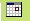

Hilfe 1.0 beta
aus BADGERwiki, der freien Wissensdatenbank
Contents |
1 Getting Started
1.1 Installation
1.1.1 Windows Installer
1.1.1.1 Für wen ist dieser Installer geeignet
Für Windowsbenutzer, die noch keinen MySQL Server und keinen Webserver installiert haben. Dies trifft auf die meisten "normalen" Windowsbenutzer zu.
1.1.1.2 Ablauf der Installation
Sie führen die heruntergeladenen .exe Datei mit einem Doppelklick aus. Das Installationsprogramm startet und zeigt die GPL (die Lizenzbestimmungen zum benutzen der BADGER finance Software) an. Sie müssen die Lizenz akzeptiertn um fortzufahren. Im nächsten Schritt können sie das Installationsverzeichnis auswählen, nach einem Klick auf "Weiter" können Sie den Startmenüeintrag beeinflussen. Mit einem Klick auf "Installieren" startet das Kopieren der Dateien. Mit "Beenden" schließen Sie den Installer, und es geht ein DOS Fenster auf (siehe Abbildung). XAMPP Lite wird eingerichtet und die Datenbank erstellt. Nach kurzer Zeit steht "Sie koennen dieses Fenster nun schliessen - You can close this window now" in dem DOS Fenster. Dann können Sie es mit dem Klick auf das X rechts oben in der Ecke schließen. Damit ist die Installation beendet.
1.1.1.3 Starten
Sowohl auf dem Desktop als auch im Startmenü befindet sich eine Verknüpfung zum Starten von BADGER finance. Mit einem Doppelklick darauf starten Sie unser Programm. Während des Startvorgangs öffnet sich ein DOS Fenster und ein Browser Fenster ihrers Standard Webbrowsers. In diesem können Sie sich das erste Mal einloggen.
WICHTIG: Bitte schließen Sie das DOS Fenster während des Benutzens von BADGER finance nicht, ansonsten droht Datenverlust.
1.1.1.4 Beenden
Um BADGER finance zu beenden, schließen Sie Ihren Webbrowser und das DOS Fenster. Um Systemressourcen zu sparen, können Sie zusätzlich aus dem Startmenü die "Stop BADGER finance" Verknüpfung aufrufen.
1.1.1.5 Welche Programme werden installiert?
Neben BADGER finance wird XAMPP Lite (http://www.apachefriends.org) installiert, das MYSQL und einen Webserver beinhaltet.
1.1.1.6 Unterstützte Systeme
Windows XP (getestet), Windows 2000 und Windows 98 (bisher nicht getestet)
1.1.1.7 Deinstallation
Bitte rufen Sie im Startmenü die "Uninstall BADGER finance" Verknüpfung auf. Beachten sie, dass es keine Sicherheitsabfrage gibt! BADGER finance wird komplett von Ihrem System entfernt, ebenso XAMPP Lite. Damit gehen sämtliche eingegebene Daten verloren.
1.1.2 Weitere Installationsmöglichkeiten
Falls Sie bereits einen Webserver und eine MySQL-Datenbank betreiben (egal unter welchem Betriebssystem und ob auf dem lokalen Rechner oder einem Internet-Webserver), können Sie diese für den Betrieb von BADGER finance verwenden. Gehen Sie dafür in folgenden Schritten vor:
- Laden Sie dafür das Archiv mit den BADGER finance Programmdateien herunter und entpacken Sie es innerhalb des Webverzeichnisses.
- Legen Sie eine Datenbank für BADGER finance an.
- Führen Sie auf dieser Datenbank den Inhalt der Datei badger/badger.sql aus.
- Editieren Sie die Datei badger/includes/config.inc.php. Passen Sie folgende Werte an Ihre Datenbankkonfiguration an:
- DB_USERNAME: Der Name des Datenbankbenutzers.
- DB_PASSWORD: Das Passwort des Datenbankbenutzers.
- DB_HOST: Adresse des Datenbankservers. Normalerweise müssen Sie hier keine Änderung vornehmen.
- DB_DATABASE_NAME: Name der zu verwendenden Datenbank.
- LOG_FILE_NAME: Name des Logfiles von BADGER finance. Diese Datei muss für den Webserver beschreibbar sein. Für eine erhöhte Sicherheit sollte sie nicht im Webverzeichnis liegen.
- Rufen Sie mit einem Webbrowser die Adresse badger/modules/welcome.php auf dem verwendeten Webserver auf.
- Das Standardpasswort lautet badger
1.2 Erstes Einloggen
Im folgenden Fenster geben Sie beim ersten Start das Standardpasswort badger ein und bestätigen dies mit dem "Login" Button
1.3 Passwort ändern
Das Passwort sollte nach dem ersten einloggen geändert werden. Dies können Sie unter dem Punkt "Einstellungen" erledigen. Hier müssen Sie das alte Passwort angeben und ein neues Passwort eingeben und bestätigen. Die Eingaben bitte mit dem Speichern-Button bestätigen.
2 Allgemeines
2.1 Tooltip
Wenn Sie in BADGER finance die Maus über dieses Fragezeichen-Symbol bewegen, erscheint ein Tooltip. Dieser enthält eine Hilfestellung oder eine Erklärung zu dem Feld links daneben bzw. den Feldern in der Spalte darunter.
2.2 Kalender
 Dieses Symbol steht rechts neben einem Kalenderfeld. Wenn Sie darauf klicken, öffnet sich ein Kalender, in dem Sie das gewünschte Datum aussuchen können.
2.3 Pflichtfelder
Felder mit einer Beschriftung in einer fetten Schriftart sind Pflichtfelder. Diese müssen Sie ausfüllen, damit die Daten verarbeitet werden können. In dem Beispielbild sehen Sie zwei Felder. Das obere Feld ist ein Pflichtfeld, das untere Feld ist eine freiwillige Angabe.
2.4 Sortieren von Tabellen
Währungen, Konten und dazugehörige Transaktionen werden in Tabellen angezeigt:
Diese Tabelle können Sie nach den Spaltenköpfen sortieren. Wenn Sie auf einen Spaltenkopf drücken, wird die Tabelle nach diesem Spaltenkopf sortiert. Ein einmaliger Klick führt zu einer aufsteigenden Sortierung. Dies wird durch den grünen Pfeil neben dem Spaltentitel angezeigt, der nach unten zeigt (siehe Abbildung). Durch einen weiteren Klick auf den Spaltenkopf wird absteigend sortiert. Der grüne Pfeil zeigt in diesem Fall nach oben.
3 Konten
3.1 Neues Konto anlegen
Durch Auswahl des Menüpunktes "Konten-->Neu-->Neues Konto" wird ein neues Konto erstellt.
Der Name des Kontos ist eine wichtige Option, wenn Sie mehrere Konten in BADGER-finance einpflegen wollen. Anhand des Namens können Sie Ihre konnten unterscheiden. Es bietet sich an, die Namen der Konten nach dem Banknamen zu wählen. Die Beschreibung des Kontos dient der weiteren Spezifizierung. Die Untergrenze, die Ihr Kontostand nicht unterschreiten soll, können Sie sich in der Prognose anzeigen lassen. Falls Sie also einen Dispositionskredit (kurz Dispo) von 1.000€ haben, sollten Sie diesen hier eintragen. Die Obergrenze dient der Kontrolle, dass Sie nicht zuviel Geld auf einem Konto haben. Im Auswahlfeld Währung können Sie die Währung auswählen, die angezeigt werden soll. Bitte beachten Sie, dass BADGER-finance noch keine Währungsumrechnung unterstützt, die Auswahl dient der reinen Anzeige eines Währungsformats.
Die Eingabe dieser Grenzen erfolgt in dem Format, dass Sie in den Einstellungen gewählt haben. Standardmäßig ist dies:
123,43 für einen positiven Wert, -813,12 für einen negativen Wert
3.2 Kontenübersicht
Dieser Menüpunkt ermöglicht einen Überblick über die vorhandenen Konten. Es werden darüber hinaus der Kontostand und die Währung der einzelnen Konten angezeigt (siehe Abbildung).
3.3 Konto bearbeiten
Wenn Sie ein Konto bearbeiten möchten, klicken Sie in das Kästchen vor dem Konto, so dass es angehakt ist, und dann auf bearbeiten oder klicken Sie doppelt auf das Konto. Sie kommen zu einem neuen Fenster; die Einstellungen die Sie vornehmen können, sind analog zu Neues Konto anlegen.
3.4 Konto löschen
Um ein Konto zu löschen, klicken Sie in das Kästchen vor dem Konto, so dass es angehakt ist, und wählen Sie löschen. Es folgt eine Sicherheitsabfrage. Bitte beachten Sie, dass alle Transaktionen auf diesem Konto ebenfalls gelöscht werden.
3.5 Erstelltes Konto öffnen
Durch Auswahl eines dieser Konten gelangen Sie zu den dazugehörigen Transaktionen (siehe Abbildung).
Hier können nun die einzelnen Transaktionen erstellt (Einmalige Transaktionen / Wiederkehrende Transaktionen), bearbeitet, sortiert und gelöscht werden (siehe Abbildung).
4 Transaktionen
4.1 Neue Transaktionen starten
Sie haben bei BADGER finance die Möglichkeit einmalige und wiederkehrende Transkationen zu starten. Die Transaktion kann eine Einzahlung oder Auszahlung sein.
4.1.1 Einzahlung
Eine Einzahlung ist ein Zufluss an Zahlungsmitteln auf einem ihrer BADGER finance Konten. Sie erhöht den Zahlungsmittelbestand. Typische Einzahlung sind: Gehalt, Lohn, Mieterträge, etc. Um eine Einzahlung zu tätigen muss ein positiver Betrag in die Transaktionsmasken (Einmalige Transaktionen / Wiederkehrende Transaktionen) eingegeben werden.
4.1.2 Auszahlung
Eine Auszahlung bist ein Abfluss an Zahlungsmitteln auf einem ihrer BADGER finance Konten. Eine Auszahlung vermindert den Zahlungsmittelbestand. Typische Auszahlungen sind: Mietkosten, Versicherungsbeiträge, etc. Um eine Auszahlung zu tätigen muss ein negativer Betrag in die Transaktionsmaske (Einmalige Transaktionen / Wiederkehrende Transaktionen) eingegeben werden.
4.1.3 Einmalige Transaktionen
Durch Auswahl dieses Menüpunkts wird eine Transaktion (Einzahlung / Auszahlung) erstellt, die einmalig stattfindet, d. h. diese Transaktion findet nicht regelmäßig zu einem festen Zeitpunkt statt. Sie können das Konto auswählen, einen Titel und eine Beschreibung eingeben. Das Buchungsdatum kann sowohl in der Vergangenheit als auch in der Zukunft sein. Den Betrag geben Sie mit dem in den Einstellungen gewählten Trennzeichen ein. Für eine Ausgabe stellen Sie dem Betrag bitte ein "-" voran.
Beispiel:
113,21 steht für eine Einnahme von 113,21 €
-12,43 steht für eine Ausgabe von 12,43 €
Das Fremdkapitalfeld dient zum Kennzeichnen von geliehenem Geld. So wird vermieden, dass Geld, welches Sie nur geliehen haben, in der Bilanz als eigenes Kapital auftaucht.
Sie können den Transaktionspartner angeben und die Transaktionskategorie aussuchen. Diese dient zur inhaltlichen Sortierung von Transaktionen, z. B. bei der Statistik.
Mit den Feldern "Außergewöhnliche Transaktion" und "Periodische Transaktion" können Sie spezielle Transaktionen kennzeichnen, die somit nicht bei der Taschengeldberechnung bei der Prognose beachtet werden. So verhindern Sie, dass das Taschengeld durch außergewöhnliche Einnahmen bzw. Ausgaben verfälscht wird bzw. dass Periodische Transaktionen in der Prognose zweimal berücksichtigt werden. Wenn Sie auf Speichern drücken, wird die Transaktion gespeichert.
4.1.4 Wiederkehrende Transaktionen
Durch Auswahl dieses Menüpunkts wird eine Transaktion (Einzahlung / Auszahlung) erstellt, die sich in einem definierten Zeitintervall wiederholt. Die wiederkehrenden Transaktionen müssen nur einmal eingegeben werden. Sie werden in jedem neuen Zeitintervall vom System automatisch wieder aufgeführt.
Sie können das gewünschte Konto, einen Titel und eine Beschreibung für die Transaktion angeben. Desweiteren können Sie mit dem Start- und dem Enddatum den Zeitraum angeben, in dem die Transaktion sich wiederholen soll. Den Betrag geben Sie mit dem in den Einstellungen gewählten Trennzeichen ein. Für eine Ausgabe stellen Sie dem Betrag bitte ein "-" voran.
Beispiel:
113,21 steht für eine Einnahme von 113,21 €
-12,43 steht für eine Ausgabe von 12,43 €
Das Fremdkapitalfeld dient zum Kennzeichnen von geliehenem Geld. So wird vermieden, dass Geld, welches Sie nur geliehen haben, in der Bilanz als eigenes Kapital auftaucht. Sie können den Transaktionspartner angeben und die Transaktionskategorie aussuchen. Diese dient zur inhaltlichen Sortierung von Transaktionen, z. B. bei der Statistik.
Mit dem Intervall geben Sie an, wann und wie häufig sich die Transaktion wiederholt. Mögliche Intervalle sind Tage, Wochen, Monate und Jahre.
Beispiel 1:
Startdatum: 01.01.2006
Enddatum: 31.12.2006
Intervall: jeden 2. Monat
Die Transaktion wird an folgenden Daten eingetragen: 01.01.2006, 01.03.2006, 01.05.2006, 01.07.2006, 01.09.2006, 01.11.2006
Beispiel 2:
Startdatum: 12.01.2006
Enddatum: 14.02.2006
Intervall: jede 1. Woche
Die Transaktion wird an folgenden Daten eingetragen: 12.01.2006, 19.01.2006, 26.01.2006, 02.02.2006, 09.02.2006
4.2 Transaktionen importieren
Durch Auswahl dieses Menüpunkts gelangen Sie zum CSV-Dateien-Import. CSV-Dateien sind Textdateien, in denen Daten strukturiert gespeichert werden. Viele Banken bieten die Transaktionen zum Download als CSV-Datei an. In den CSV-Dateien befinden sich die Transaktionen, die bereits über Ihr Konto bei Ihrer Bank abgelaufen sind. Sie müssen diese nach einem Import durch die CSV-Dateien nicht mehr manuell eintragen.
Im ersten Feld müssen Sie den Pfad der CSV-Datei auf ihrem Computer angeben. Über die Durchsuchen-Schaltfläche kommen Sie in Dialog ihres Betriebssystems, in dem Sie die Datei aussuchen können.
Im zweiten Feld können Sie das CSV-Format auswählen. Jede Bank hat ein anderes Format, so dass diese untereinander nicht kompatibel sind. Wenn Ihre Bank nicht aufgezählt ist, können Sie selbst einen Parser erstellen oder auf der Homepage www.badger-finance.org nach einem passenende Parser suchen. Falls keiner vorhanden ist, können Sie im Forum fragen, ob Ihnen jemand diesen programmieren kann.
Im dritten Feld können Sie das Konto aussuchen, in das die Transaktionen gespeichert werden.
Wenn Sie auf Upload klicken, werden alle Transaktionen aus der CSV Datei angezeigt, die noch nicht auf diesem Konto gespeichert sind (d. h. es ist keine Transaktion auf diesem Konto vorhanden, die das selbe Buchungsdatum und den selben Betrag hat).
Nun können Sie jede Transaktion bearbeiten, z. B. den Transaktionspartner oder den Verwendungszweck, eine Kategorie zuweisen oder die Transaktion auf ein anderes Konto buchen. In der Kopfzeile ist immer ein Tooltip vorhanden (? Symbol), wenn Sie mit der Maus darüber fahren, bekommen Sie eine detaillierte Hilfe angezeigt. Wenn Sie mit der Bearbeitung der Transaktionen fertig sind, klicken Sie auf "In Datenbank schreiben" und die Transaktionen werden gespeichert.
4.3 Transaktionskategorien
4.3.1 Neue Transaktionskategorie anlegen
Durch Auswahl dieses Menüpunkts wird eine neue Transaktionskategorie erstellt. Diese dienen der inhaltlichen Sortierung von Transaktionen, z. B. bei der Statistik.
Neben dem Kategorienamen können Sie eine Beschreibung angeben. Ebenso können Sie angeben, ob die Transaktionen in dieser Kategorie Fremdkapital sind. Diese Information wird momentan in BADGER finance noch nicht benutzt.
Sie können für die neue Kategorie eine Elternkategorie angeben. Damit können Sie vorhandene Kategorien weiter unterteilen. Wenn Sie die Option "Keine Elternkategorie" auswählen, dann kann die Kategorie später selbst als Elternkategorie und somit unterteilt werden.
Beispiel:
Sie möchten die Kategorie Kommunikation in Mobiltelefon und Festnetz unterteilen. Dazu legen Sie die Kategorie Mobiltelefon an und wählen unter Elternkategorie "Kommunikation" aus.
4.3.2 Transaktionskategorien-Überblick
Durch Auswahl dieses Menüpunkts gelangen Sie zur Transaktionskategorieübersicht. Hier können Transaktionskategorien erstellt, bearbeitet und gelöscht werden.
4.3.3 Transaktionskategorien bearbeiten
Durch einen Doppelklick auf die gewünschte Kategorie oder das Markieren der Kategorie und einen Klick auf die Bearbeiten-Schaltfläche können Konteneigenschaften editiert werden. Damit Änderungen wirksam werden muss anschließend die Speichern-Schaltfläche betätigt werden.
4.3.4 Transaktionskategorien löschen
Zum Löschen einer Kategorie markieren Sie die gewünschte Kategorie und klicken oben auf den Button "Löschen". Die Sicherheitswarnung muss für ein endgültiges Löschen bestätigt werden.
5 Auswertung der Kontendaten
Dieses Modul ermöglicht eine grafische Aufbereitung der eingegebenen Kontendaten. Die folgende Abbildung zeigt den Aufbau des Moduls.
Es können zwei verschiedene Arten von Statistiken angezeigt werden:
- Beim Trend wird der aktuelle Kontostand zum jeweiligen Zeitpunkt als Kurve angezeigt.
- Die Kategorien zeigen die Verteilung von Ein- oder Ausgaben auf die verschiedenen Kategorien als Tortendiagramm an.
Für beide Statistik-Arten muss der Zeitraum und die zu Grunde liegenden Konten gewählt werden. Es werden nur Transaktionen innerhalb des angegebenen Zeitraums auf den gewählten Konten betrachtet. Bei Konten mit unterschiedlichen Währungen findet keine Umrechnung statt, es wird der Wert aller Währungen gleichgesetzt.
Für den Trend sind keine weiteren Einstellungen nötig. Nach der Wahl der Anzeigen-Schaltfläche wird pro gewähltem Konto der Verlauf des Kontostandes über den gewählten Zeitraum angezeigt. Zusätzlich wird die Summe aller Konten dargestellt.
Die Kategorie-Anzeige benötigt noch zwei weitere Einstellungen. Zunächst ist unter Kategorie-Art auszuwählen, ob Sie Einnahmen oder Ausgaben betrachten wollen. Weiterhin können Sie unter Kategorien zusammenfassen auswählen, ob nur Hauptkategorien angezeigt werden sollen oder auch Unterkategorien aufgeführt werden. Nach der Wahl der Anzeigen-Schaltfläche erscheint unter den Optionen das entsprechende Torten-Diagramm.
6 System
In diesem Reiter finden sich systemweite Einstellmöglichkeiten, Währungseinstellungen, sowie eine Import- und Exportfunktion.
6.1 Einstellungen
In diesen systemweiten Einstellungen sind - wie folgende Abbildung zeigt - zahlreiche Einstellmöglichkeiten vorhanden:
- Theme: Verändert das Aussehen der GUI
- Sprache: Legt die Sprache fest
- Datumsformat: Legt das Datumsformat fest. Die Abbildung zeigt das deutsche Standardformat (31.01.2000)
- Trennzeichen: Hier kann zwischen verschiedenen Darstellungsmöglichkeiten für Tausender- und Kommatrennzeichen ausgewählt werden
- Maximale Loginversuche: Hier wird festgelegt, nach wievielen fehlgeschlagenen Loginversuchen der Account gesperrt wird
- Dauer der Zugangssperre (Sek.): Die dazugehörige Dauer der Accountsperre in Sekunden.
- Startseite: Hier kann einer personalisierte Startseite festgelgt werden
- Sessionlänge: Zeitdauer bis ein erneutes Einloggen nötig wird in Sekunden
- Wenn Sie alle Transaktionen als Wiederkehrende Transaktionen automatisch eintragen lassen wollen. (Achtung! Bei CSV-Import bitte diese Option ausstellen!)
- Passwort ändern: Hier kann bei Bedarf das Passwort geändert werden.
Abschließend müssen die Änderungen über Speichern ins System eingetragen werden.
6.2 Backup
Bei BADGER finance stehen Ihnen eine Importfunktion sowie eine Exportfunktion zu Verfügung.
6.2.1 Import
Hier bieten Ihnen BADGER finance die Möglichkeit Datenbestände zu importieren, um Ihr BADGER finance auch auf anderen Rechnern benutzen zu können.
Zu beachten ist jedoch, dass die zu diesem Zeitpunkt im System vorhandenen Datenbestände bei diesem Vorgang überschrieben werden. Der Haken vor der Sicherheitswarnung muss gesetzt werden, so dass die Importieren-Funktion zur Verfügung steht.
6.2.2 Export
Durch den einfachen Druck auf den "Exportieren" Button werden die aktuellen Datensätze exportiert, so dass Sie sie bei Notwendigkeit wieder einspielen können.
6.3 Währungen
Hier können Sie eigene Währungen einpflegen, die anschließend systemweit zur Verfügung stehen. Diese können anschließend bearbeitet oder gelöscht werden.
7 Drucken
Hier können Sie die aktuelle Seite in einem druckfreundlichen Format drucken. Dazu wird die Druckfunktion ihres Browsers benutzt. Der Ausdruck der Graphen von Statistik und Prognose wird nicht mit jedem Browser unterstützt.
8 Hilfe
Das Drücken dieses Buttons bringt sie auf diese Hilfeseite.
9 Über Badger
Hier erhalten Sie Informationen über die Lizenz und die Entwickler von BADGER finance. Ebenso erhalten Sie Informationen zu den bei der Entwicklung verwendeten Programmen und Komponenten.
10 Abmelden
Hier können Sie sich aus BADGER finance abmelden und gelangen anschließend wieder zur Login-Seite. Um BADGER finance wieder zu verwenden, müssen Sie Ihr Passwort erneut eingeben.


{kind=link}
{kind=link}
{kind=link}
{kind=link}
{kind=link}
{kind=link}
{kind=link}
{kind=link}
{kind=link}
{kind=link}
{kind=link}
{kind=link}
{kind=link}
{kind=link}
{kind=link}
{kind=link}
{kind=link}
{kind=link}
{kind=link}
{kind=link}
{kind=link}